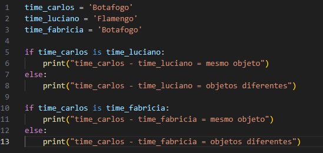

Bem vindo
Módulo I
Módulo II
Módulo III
|
Algoritmos de busca e ordenação são componentes essenciais em ciência da computação e são amplamente utilizados em uma variedade de aplicações, desde a organização de dados até a otimização de algoritmos de busca na web. Vou detalhar alguns dos algoritmos mais comuns em cada categoria e fornecer exemplos para ilustrar seu funcionamento. Algoritmos de busca e ordenação são fundamentais em ciência da computação e desenvolvimento de software, pois ajudam a organizar e localizar dados de maneira eficiente. Eles são componentes essenciais para uma ampla variedade de aplicações, desde sistemas de banco de dados e mecanismos de busca até análise de dados e aplicações de inteligência artificial. Algoritmos de ordenação...Ordenações no vetor...Permutação A ordenação por permutação, também conhecida como Bogosort, é um algoritmo de ordenação altamente ineficiente e mais usado como uma curiosidade ou piada na ciência da computação, devido à sua falta de eficiência. Como Funciona: A ideia básica do Bogosort é simples: 1. Verifique se a lista está ordenada. 2. Se não estiver ordenada, embaralhe a lista aleatoriamente. 3. Repita o processo até que a lista esteja ordenada. Inserção Direta A inserção direta (ou simplesmente "inserção") é um dos algoritmos de ordenação mais simples e intuitivos. Ele funciona de maneira semelhante à forma como muitas pessoas organizam cartas na mão: pegando uma carta de cada vez e inserindo-a na posição correta em relação às outras cartas que já estão ordenadas. Como Funciona: 1. Percorrer a Lista: Comece com o segundo elemento do vetor (o primeiro elemento já é considerado "ordenado"). 2. Comparar e Inserir: Para cada elemento, compare-o com os elementos anteriores que já estão ordenados e insira-o na posição correta. 3. Repetir: Continue esse processo para todos os elementos até que toda a lista esteja ordenada.  Inserção Binária A inserção binária é uma variação do algoritmo de ordenação por inserção. A ideia principal da ordenação por inserção é construir a lista final um elemento de cada vez, comparando e inserindo cada novo elemento na posição correta. No entanto, em vez de simplesmente percorrer a lista linearmente para encontrar a posição correta, a inserção binária utiliza a busca binária para encontrar mais rapidamente onde inserir o novo elemento. Como Funciona: 1. Divida e Conquiste: Para cada elemento, utilize a busca binária para determinar a posição correta onde ele deve ser inserido na porção já ordenada da lista. 2. Inserção: Uma vez encontrada a posição correta, mova todos os elementos que são maiores que o elemento atual uma posição para a direita, e insira o elemento. Seleção direta A seleção direta (ou simplesmente "seleção") é outro algoritmo de ordenação simples e intuitivo. Ele funciona selecionando repetidamente o menor (ou maior, dependendo da ordem desejada) elemento da lista e colocando-o na sua posição correta. Como Funciona: 1. Percorrer a Lista: Comece pelo primeiro elemento e percorra a lista para encontrar o menor elemento. 2. Trocar de Posição: Depois de encontrar o menor elemento, troque-o com o elemento na posição inicial. 3. Repetir: Prossiga para o próximo elemento e repita o processo até que toda a lista esteja ordenada. Bolha A ordenação por bolha (ou bubble sort) é um dos algoritmos de ordenação mais simples. Ele funciona repetidamente passando pela lista e trocando elementos adjacentes que estão fora de ordem, "empurrando" os maiores elementos para o final da lista e os menores para o início, como se fossem "bolhas" subindo à superfície. Como Funciona: 1.Percorrer a Lista: Comece no início da lista e compare cada par de elementos adjacentes. 2.Trocar se Necessário: Se o elemento da esquerda for maior que o da direita (em uma ordenação crescente), troque-os de lugar. 3.Repetir: Continue repetindo esse processo até que a lista esteja ordenada. Ordenações na matriz...Por linha Ordenar uma matriz (ou seja, uma lista de listas) por linha significa ordenar cada linha individualmente, mantendo a estrutura da matriz intacta. Cada linha é tratada como uma lista independente e, em seguida, ordenada. Como Funciona: 1. Percorrer as Linhas: Percorra cada linha da matriz. 2. Ordenar a Linha: Para cada linha, aplique um algoritmo de ordenação, como o sort() do Python. 3. Repetir: Faça isso para todas as linhas da matriz. Exemplo de Ordenação Decrescente: Por coluna Ordenar uma matriz por coluna significa ordenar os elementos dentro de cada coluna, reorganizando as linhas da matriz para que os elementos de cada coluna estejam em ordem. Esse tipo de ordenação pode ser mais complexo do que ordenar por linha, porque envolve manipular toda a estrutura da matriz. Como Funciona: 1. Transpor a Matriz (Opcional): Em algumas abordagens, pode ser útil transpor a matriz para tratar as colunas como linhas, mas isso não é necessário para o método que vamos usar. 2. Ordenar cada Coluna: Para cada coluna, extraia os elementos, ordene-os, e depois insira-os de volta na matriz. Ordenação Decrescente: Completa Ordenar uma matriz completa significa tratar todos os elementos da matriz como uma única lista, ordená-los e, em seguida, reorganizar a matriz com os elementos ordenados. Esse tipo de ordenação reorganiza todos os elementos da matriz em uma única sequência, respeitando as dimensões originais da matriz. Como Funciona: 1. Flatten (Achatar) a Matriz: Transforme todos os elementos da matriz em uma única lista. 2. Ordenar a Lista: Ordene essa lista usando um algoritmo de ordenação. 3. Reformatar a Matriz: Recoloque os elementos ordenados na estrutura original da matriz.
Este código em Python cria uma matriz de dimensões definidas pelo usuário e a preenche com valores fornecidos. Em seguida, todos os elementos da matriz são extraídos e colocados em uma lista (`vet`). A lista é ordenada utilizando uma versão modificada do algoritmo de ordenação por seleção (selection sort). Após a ordenação, os elementos são recolocados na matriz original, que é então exibida na forma ordenada. A ordenação reorganiza todos os valores da matriz em ordem crescente, e a matriz é impressa novamente com os valores já organizados. Algoritmos de busca...Buscas no vetor...Busca linear • A busca simples, ou busca linear, percorre o vetor (ou lista) do início ao fim, comparando cada elemento com o valor que você está procurando. É simples, mas pode ser lenta se o vetor for muito grande, porque precisa verificar cada elemento até encontrar o que quer ou até chegar ao fim. Busca binária • A busca binária é muito mais eficiente, mas só funciona em vetores que já estão ordenados. Ela funciona dividindo o vetor ao meio repetidamente, descartando metade do vetor onde o elemento não pode estar, até encontrar o elemento ou concluir que ele não está no vetor. Busca na matriz...• Buscar um elemento em uma matriz é um problema comum em programação e ciência de dados. O objetivo é encontrar a posição de um elemento específico em uma estrutura bidimensional. A abordagem para a busca pode variar dependendo das características da matriz, como ordenação e tamanho. • Este código em Python cria uma matriz de tamanho definido pelo usuário, preenche-a com valores também fornecidos pelo usuário e, em seguida, busca um número específico dentro dessa matriz. Ele usa duas estruturas de repetição (for) para percorrer todas as posições da matriz. Se o número for encontrado, o código registra quantas vezes ele aparece e imprime as posições onde ele foi encontrado. Ao final, o código informa o total de vezes que o número foi localizado na matriz. |
|---|